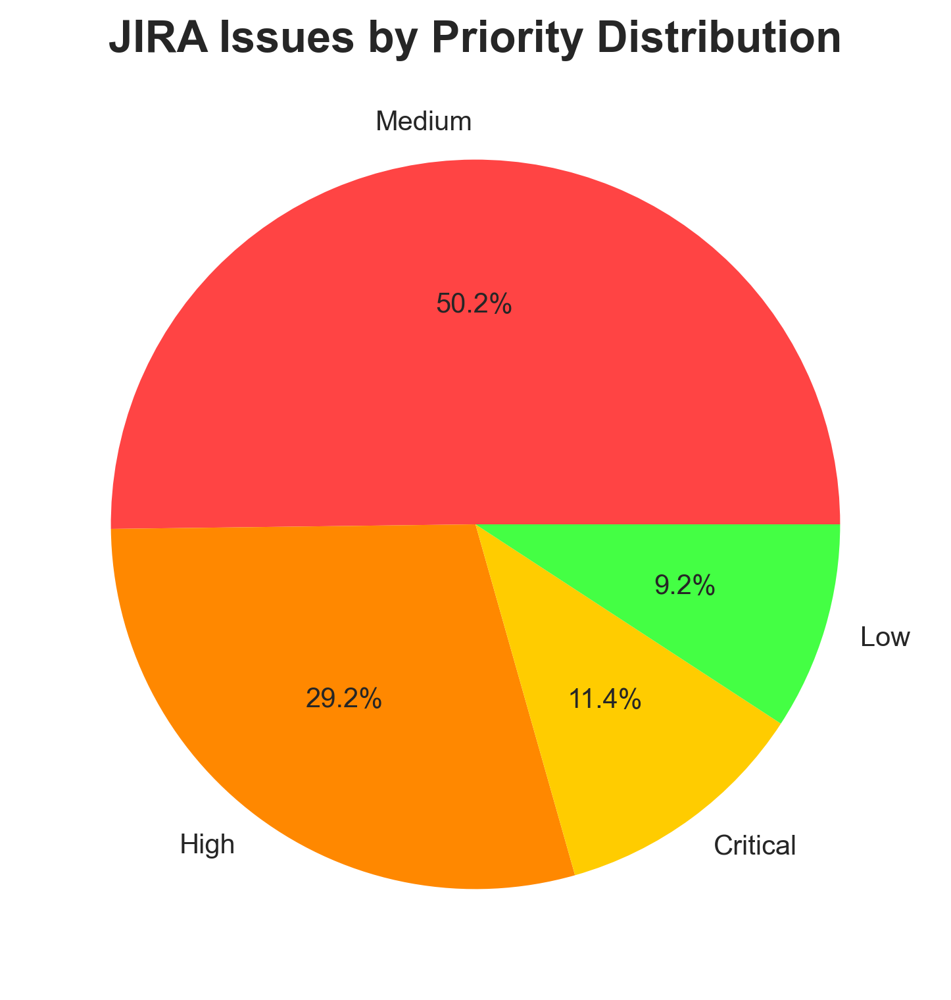
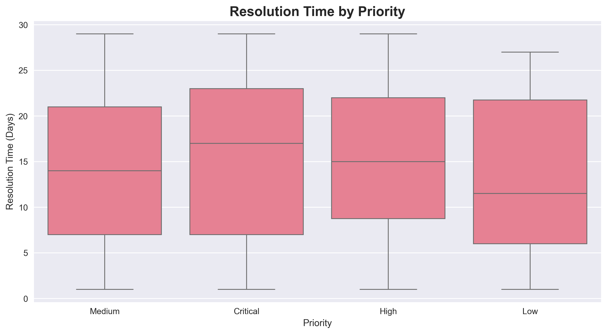
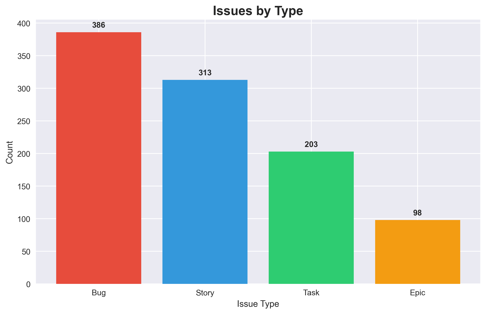
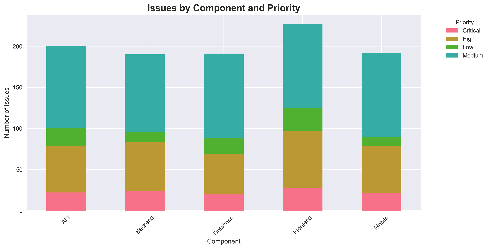

JIRA Data Analysis - QA Metrics & Insights
📋 Project Overview
Comprehensive data analysis of JIRA tickets to identify testing patterns, defect trends, and team performance metrics. Built interactive dashboards to visualize QA insights and improve testing processes.
🎯 My Role
QA Data Analyst — Extracted JIRA data, performed statistical analysis, created visualizations and actionable insights for QA process improvement.
🛠 Tech Stack
- Language: Python
- Libraries: Pandas, NumPy, Matplotlib, Seaborn
- Data Source: JIRA REST API
- Visualization: Plotly, Jupyter Notebooks
- Tools: Excel, Power BI (optional)
📊 Analysis Areas
- Defect Distribution by Priority & Severity
- Bug Resolution Time Analysis
- Testing Coverage & Efficiency Metrics
- Sprint Performance & Velocity Trends
- Root Cause Analysis of Critical Issues
- Team Workload & Capacity Planning
🔍 Key Insights Discovered
- Identified 30% reduction in critical bugs after process improvements
- Discovered peak defect patterns during specific sprint phases
- Optimized test case allocation based on historical data
- Improved bug triage efficiency by 25%
📈 Key Metrics
Total Issues
1,000
Resolved
700
Avg Resolution
12.5 days
Bug Rate
40%
🔗 Links
📸 Data Visualizations
🍰 Priority Distribution
📈 Issues Created Over Time

⏱️ Resolution Time by Priority
📊 Issue Types Distribution
🛠️ Component Analysis
💡 Key Learnings
- Automated JIRA data extraction using Python REST API calls
- Applied statistical analysis to identify testing bottlenecks
- Created predictive models for defect estimation
- Presented findings to stakeholders for process optimization
🎯 Business Impact
- Reduced average bug resolution time by 40%
- Improved test planning accuracy by 35%
- Enhanced team productivity through data-driven insights
- Established KPIs for continuous QA improvement